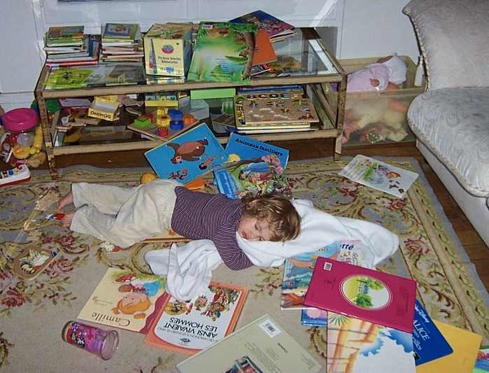

This is me when I was maybe two years old, collapsed in the middle of my picture books. Whoever took the photo labelled it “bandida se escapó”: the little bandit escaped.
I read a lot as a child. When I was visiting friends or family, I would escape to find the books and stay there until someone came looking. We had books in the house, people gave me books, every school I went to had a nice library. I never disciplined myself into reading, it was just the path of least resistance.
When I was sixteen, I moved countries to start university: new place, everything to figure out.
The uni library was a warehouse of textbooks, which is wonderful if you want to read math proofs for fun (I know some people who genuinely do) but none of what I liked to read was there. So I stopped reading without really noticing it.
The way back was just as coincidental. When I took a gap year, my older sister advised me to get an e-reader for travelling: you can carry hundreds of books, read on trains, and the battery lasts forever. So I got one to try, more for the convenience than anything.
I discovered that the internet is full of free books, felt like a kid in a candy shop (bring back z-library, my beloved!). Suddenly the whole thing was easy again: a shelf in my pocket, a new default, no friction. I started reading every day before sleep (I’m very slow to fall asleep, and it turns out reading in these last hours feels far better than the phone).
I don’t love reading nonfiction, I tried but mostly bounced off it. At 1AM I don’t want to be informed. If I want to learn about a topic I’ll usually watch something or read articles about it. What I want at night is stories. Long, slow ones. The kind where you follow the evolution of the characters for hundreds of pages. These books do something to you that is worth describing.
* * *
Moral imagination is the ability to mentally inhabit a situation that isn’t yours: to imagine your way into a position unlike your own and see a choice from the inside, including the reasons that make it look right to the person facing it. It’s a different thing from knowing right from wrong. Having a solid moral rulebook is weak if your moral imagination is starved.
You develop it by spending hundreds of pages inside someone, following their reasoning through all the small histories and justifications, until they stop being a type and become a specific person whose logic you can almost inhabit. You catch yourself understanding a choice you’d have otherwise condemned from the outside.
By default we judge fast, on whatever little we can see. You train your moral imagination by overriding that on purpose: spending time inside minds unlike your own, sitting in the unresolvedness rather than reaching for closure. The feeling of finishing a great novel is a kind of unsettled ache.
Edmund Burke wrote about the sublime: not “beautiful” but overwhelming. The vast, the frightening, the thing too large for you to master that unsettles you a little as it pulls you in. The terrible and the sublime often arrive together. A great story doesn’t just withhold its verdict, it makes you feel the weight of what’s at stake, the size of a human life, the cost of its choices.
That feeling needs time to build. It accumulates across hundreds of pages, across several nights of reading the same book, out of details slowly adding up. Short experiences might give you a jolt, a spike of feeling, but this jolt is not the sublime. The jolt is over the instant it lands, the sublime is something you have to be slowly walked into until the weight of it arrives.
Both inhabiting a mind and reaching for the sublime require the same things: time, length, and a reader doing part of the work.
* * *
Short-form and AI-generated content are built to be fast and to hand you everything pre-digested. In a novel, you build the terror and the awe over many nights, at your own pace, from your own head. That slow co-authoring is exactly what the frictionless formats remove: they’re made so that no imaginative effort is required, when the effort is the whole point.
That effort has to be chosen now. Nothing around you will nudge you toward it so you have to make the room for it yourself. Choose it on purpose: read the books that don’t comfort you, give them a few nights and let them work on you.
Here is my reading list: everything I’ve logged since 2023 when I got that e-reader. It’s incomplete and it isn’t a list of recommendations, just my own tracking.